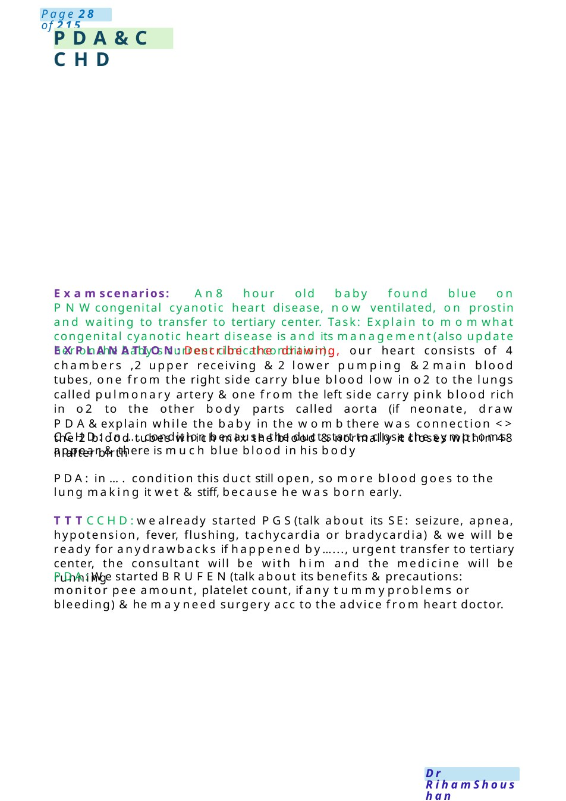
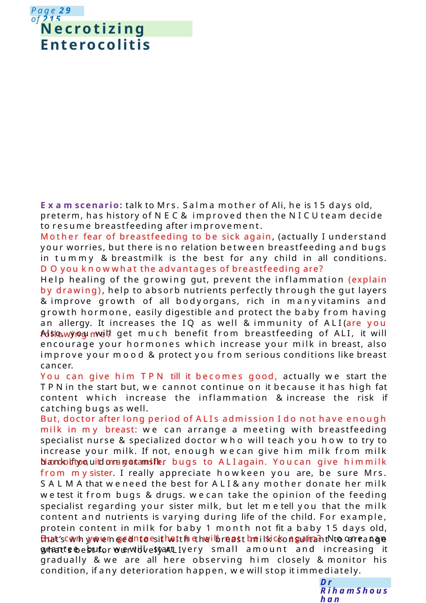
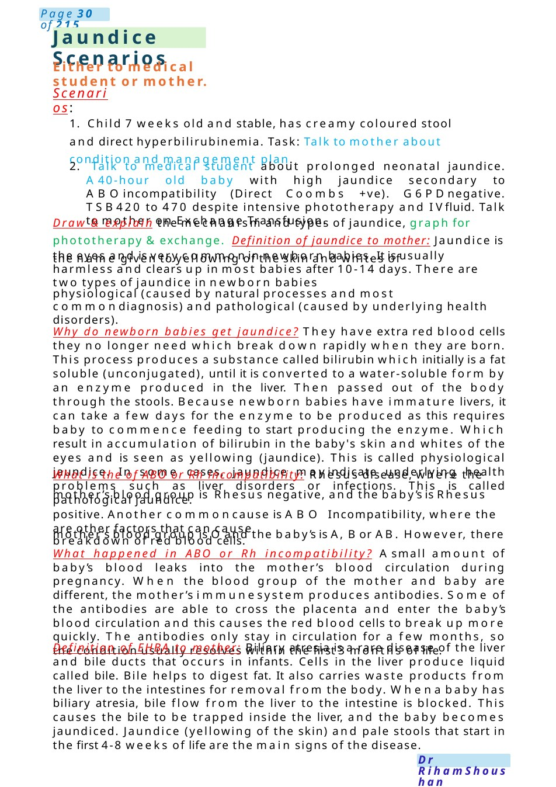

PDA&CCHD
Examscenarios: An8 hour old baby found blue on PNWcongenital cyanotic heart disease, now ventilated, on prostin and waiting to transfer to tertiary center. Task: Explain to momwhat congenital cyanotic heart disease is and its management(also update her onthe baby's current clinical condition). EXPLANATION:Describe the drawing, our heart consists of 4 chambers ,2 upper receiving &2 lower pumping &2main blood tubes, one from the right side carry blue blood low in o2 to the lungs called pulmonary artery &one from the left side carry pink blood rich in o2 to the other body parts called aorta (if neonate, draw PDA&exp…
Scenario Summary
Examscenarios: An8 hour old baby found blue on PNWcongenital cyanotic heart disease, now ventilated, on prostin and waiting to transfer to tertiary center. Task: Explain to momwhat congenital cyanotic heart disease is and its management(also update her onthe baby's current clinical condition). EXPLANATION:Describe the drawing, our heart consists of 4 chambers ,2 upper receiving &2 lower pumping &2main blood tubes, one from the right side carry blue blood low in o2 to the lungs called pulmonary artery &one from the left side carry pink blood rich in o2 to the other body parts called aorta (if neonate, draw PDA&exp…
Full Original Scenario

PDA&CCHD
Examscenarios: An8 hour old baby found blue on PNWcongenital cyanotic heart disease, now ventilated, on prostin and waiting to transfer to tertiary center. Task: Explain to momwhat congenital cyanotic heart disease is and its management(also update her onthe baby's current clinical condition).
EXPLANATION:Describe the drawing, our heart consists of 4 chambers ,2 upper receiving &2 lower pumping &2main blood tubes, one from the right side carry blue blood low in o2 to the lungs called pulmonary artery &one from the left side carry pink blood rich in o2 to the other body parts called aorta (if neonate, draw PDA&explain while the baby in the wombthere was connection <> the 2 blood tubes which mix the blood &normally it closes within 48 h after birth
CCHD: In ....condition because the duct start to close the symptoms appear &there is much blue blood in his body
PDA: in .... condition this duct still open, so more blood goes to the lung making it wet &stiff, because he was born early.
TTTCCHD:wealready started PGS(talk about its SE: seizure, apnea, hypotension, fever, flushing, tachycardia or bradycardia) &we will be ready for anydrawbacks if happened by......, urgent transfer to tertiary center, the consultant will be with him and the medicine will be running
PDA:Westarted BRUFEN(talk about its benefits &precautions: monitor pee amount, platelet count, if any tummyproblems or bleeding) &he mayneed surgery acc to the advice from heart doctor.

Necrotizing Enterocolitis
Examscenario: talk to Mrs. Salma mother of Ali, he is 15 days old, preterm, has history of NEC& improved then the NICUteam decide to resume breastfeeding after improvement.
Mother fear of breastfeeding to be sick again, (actually I understand your worries, but there is no relation between breastfeeding and bugs in tummy &breastmilk is the best for any child in all conditions. DOyou knowwhat the advantages of breastfeeding are?
Help healing of the growing gut, prevent the inflammation (explain by drawing), help to absorb nutrients perfectly through the gut layers &improve growth of all bodyorgans, rich in manyvitamins and growth hormone, easily digestible and protect the baby from having an allergy. It increases the IQ as well &immunity of ALI(are you following me?
Also, you will get much benefit from breastfeeding of ALI, it will encourage your hormones which increase your milk in breast, also improve your mood &protect you from serious conditions like breast cancer.
You can give him TPN till it becomes good, actually we start the TPNin the start but, we cannot continue on it because it has high fat content which increase the inflammation &increase the risk if catching bugs as well.
But, doctor after long period of ALIs admission I do not have enough milk in my breast: we can arrange a meeting with breastfeeding specialist nurse &specialized doctor who will teach you how to try to increase your milk. If not, enough wecan give him milk from milk bank if you do not milk.
Nodoctor, it maytransfer bugs to ALIagain. Youcan give himmilk from mysister. I really appreciate howkeen you are, be sure Mrs. SALMAthat weneed the best for ALI&any mother donate her milk wetest it from bugs &drugs. wecan take the opinion of the feeding specialist regarding your sister milk, but let metell you that the milk content and nutrients is varying during life of the child. For example, protein content in milk for baby 1 month not fit a baby 15 days old, that’s whyweneed to sit with the breast milk consultant to arrange what's best for our lovely ALI.
But can your grantee that he will not be sick again? Noone can grantee but, wewill start very small amount and increasing it gradually &we are all here observing him closely &monitor his condition, if any deterioration happen, wewill stop it immediately.

Jaundice Scenarios
Either to medical student or mother.
Scenarios:
1. Child 7 weeks old and stable, has creamy coloured stool and direct hyperbilirubinemia. Task: Talk to mother about condition and management plan.
2. Talk to medical student about prolonged neonatal jaundice. A40-hour old baby with high jaundice secondary to ABOincompatibility (Direct Coombs +ve). G6PDnegative. TSB420 to 470 despite intensive phototherapy and IVfluid. Talk to mother on Exchange Transfusion.
Draw & explain the mechanism and types of jaundice, graph for phototherapy &exchange. Definition of jaundice to mother: Jaundice is the name given to yellowing of the skin and whites of
the eyes and is very commonin newborn babies. It is usually harmless and clears up in most babies after 10-14 days. There are two types of jaundice in newborn babies
physiological (caused by natural processes and most commondiagnosis) and pathological (caused by underlying health disorders).
Why do newborn babies get jaundice? They have extra red blood cells they no longer need which break down rapidly when they are born. This process produces a substance called bilirubin which initially is a fat soluble (unconjugated), until it is converted to a water-soluble form by an enzyme produced in the liver. Then passed out of the body through the stools. Because newborn babies have immature livers, it can take a few days for the enzyme to be produced as this requires baby to commence feeding to start producing the enzyme. Which result in accumulation of bilirubin in the baby's skin and whites of the eyes and is seen as yellowing (jaundice). This is called physiological jaundice. In some cases, jaundice mayindicate underlying health problems such as liver disorders or infections. This is called pathological jaundice.
What is the of ABO or Rh incompatibility: Rhesus disease, where the mother’s blood group is Rhesus negative, and the baby’s is Rhesus positive. Another commoncause is ABO Incompatibility, where the mother’s blood group is Oand the baby’s is A, Bor AB. However, there
are other factors that can cause breakdown of red blood cells.
What happened in ABO or Rh incompatibility? Asmall amount of baby’s blood leaks into the mother’s blood circulation during pregnancy. When the blood group of the mother and baby are different, the mother’s immunesystem produces antibodies. Some of the antibodies are able to cross the placenta and enter the baby’s blood circulation and this causes the red blood cells to break up more quickly. The antibodies only stay in circulation for a few months, so the condition usually resolves within the first 3 months of life.
Definition of EHBA to mother: Biliary atresia is a rare disease of the liver and bile ducts that occurs in infants. Cells in the liver produce liquid called bile. Bile helps to digest fat. It also carries waste products from the liver to the intestines for removal from the body. Whena baby has biliary atresia, bile flow from the liver to the intestine is blocked. This causes the bile to be trapped inside the liver, and the baby becomes jaundiced. Jaundice (yellowing of the skin) and pale stools that start in the first 4-8 weeks of life are the main signs of the disease.